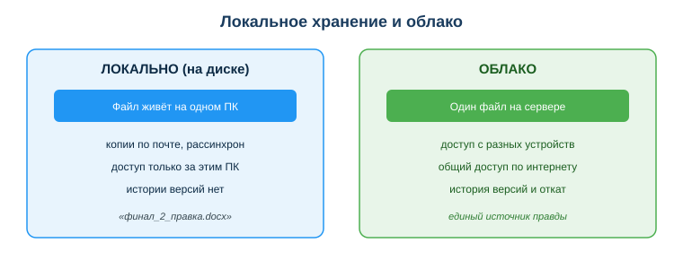
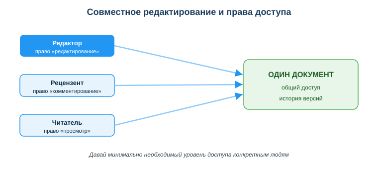

Облачные сервисы и совместная работа
Практическая ситуация
Команда готовит отчёт. По почте летает файл «итоговый_финал_2_правка.docx» — уже в пяти версиях, и никто не знает, какая из них настоящая. Один правит копию у себя, другой — у себя, потом эти правки нужно как-то свести вместе. Это типичная боль локального хранения: файл живёт на одном компьютере, а команде нужен общий и всегда актуальный документ.
Облачные сервисы решают проблему: один документ, общий доступ, совместное редактирование и история версий. Для разработчика облако — это и хранилище, и среда командной работы, и (в перспективе) место, где живёт его приложение. Этот урок — про грамотную и безопасную работу с облаком.

Что ты научишься делать
- объяснять, что такое облачные технологии и зачем они команде;
- настраивать общий доступ и уровни прав без хаоса;
- пользоваться историей версий, чтобы не бояться редактировать;
- соблюдать базовые правила безопасности облака.
Почему это важно
Современная разработка — это командная работа над общими файлами и кодом. Без облака команда тонет в копиях, рассинхроне версий и потерянных правках. Облако даёт единый источник правды: все видят один и тот же актуальный документ.
Связь с профессией: разработчик ежедневно работает в облаке — общий диск с документацией, совместные таблицы, а позже и облачная инфраструктура, где запускается приложение. Умение настроить доступ правильно (минимум прав, конкретным людям) — это и про продуктивность, и про безопасность данных проекта.
Учимся читать схему
Посмотри на сравнение локального хранения и облака выше. Ответь на вопросы:
- где «живёт» файл при локальном хранении, а где — в облаке?
- что появляется в облаке такого, чего нет при копиях по почте?
- почему облако называют «единым источником правды»?
Главное понятие
Облачные технологии — хранение и обработка данных на удалённых серверах с доступом через интернет.
Проще: твои файлы лежат не на одном компьютере, а на сервере провайдера, и ты открываешь их с любого устройства, где есть интернет и доступ к аккаунту.
Модели облачных сервисов
Облачные сервисы различают по уровню готовности к использованию:
- Хранилище (Google Drive, OneDrive, Yandex Disk) — файлы и совместная работа;
- Сервисы-приложения (Google Docs, Sheets) — работа прямо в браузере, без установки программ;
- Инфраструктура для разработчиков (облачные серверы, базы данных) — там запускают и размещают приложения.
Совместная работа без хаоса
Совместное редактирование — это когда несколько пользователей работают над одним документом, а права доступа определяют, что каждому можно. Главные правила:
- Один источник правды: один файл или папка с общим доступом, а не копии по почте;
- Уровни доступа: «просмотр», «комментирование», «редактирование» — давай минимально необходимый;
- История версий: можно откатиться к любому прошлому состоянию — не бойся редактировать;
- Комментарии и задачи прямо в документе вместо длинной переписки.

Мини-кейс
Команда вела отчёт в общем Google-документе. Один участник «всё удалил». Паника? Нет: открыли историю версий и восстановили нужное состояние за минуту. Следующий шаг — настроить право «комментирование» тем, кто не должен править текст напрямую.
Риски и безопасность
- Доступ по ссылке «всем, у кого есть ссылка» = фактически публикация. Давай доступ конкретным людям по приглашению.
- Конфиденциальные данные не клади в личное облако без согласования — только в защищённое корпоративное хранилище.
- 2FA (двухфакторная аутентификация) на облачный аккаунт обязательна — там вся твоя работа.
- Помни: файл в облаке доступен, пока есть интернет и аккаунт активен.
Разбор типичной ошибки
Ошибка. «Расшарить» документ с рабочими данными ссылкой «для всех, у кого есть ссылка».
Почему это ошибка. Такая ссылка легко утечёт — попадёт в чат, в письмо, в историю браузера — и данные станут публичными для любого, кто её получит.
Как правильно. Давать доступ по приглашению конкретным аккаунтам и ровно тот уровень прав, который человеку реально нужен.
Практика
Ответь письменно:
- Назови три модели облачных сервисов и приведи по примеру к каждой.
- Рецензенту нужно оставлять замечания, но не править текст. Какой уровень доступа ты ему дашь и почему?
Образец (часть ответа на пункт 2): «Дам уровень „комментирование“: он сможет оставлять замечания прямо в документе, но не изменит текст. Это принцип минимально необходимого доступа».
Самопроверка
- Я могу объяснить, что такое облачные технологии и назвать их модели.
- Я умею выбрать правильный уровень доступа для разных участников.
- Я знаю, как восстановить документ через историю версий и зачем нужна 2FA.
Подумай
- Какие свои учебные или рабочие файлы тебе стоило бы перенести в облако с общим доступом? Кому и какой уровень прав ты бы дал?
- Почему «дать доступ всем по ссылке» удобнее, но опаснее, чем «пригласить конкретных людей»?
Итог
Что теперь делать:
- используй облако как единый источник правды, а не копии по почте;
- давай минимально необходимый уровень доступа конкретным людям;
- пользуйся историей версий — не бойся редактировать;
- включи 2FA и не клади конфиденциальные данные в личное облако.
Полезные ссылки
Источник: учебные материалы по применению ИКТ и цифровых технологий (рамка DigComp 2.2); официальная справка Google Workspace и Microsoft 365.
Материал разработан рабочей группой ТОО «Колледж Хекслет Казахстан» и одобрен к использованию в обучении решением Педагогического совета.